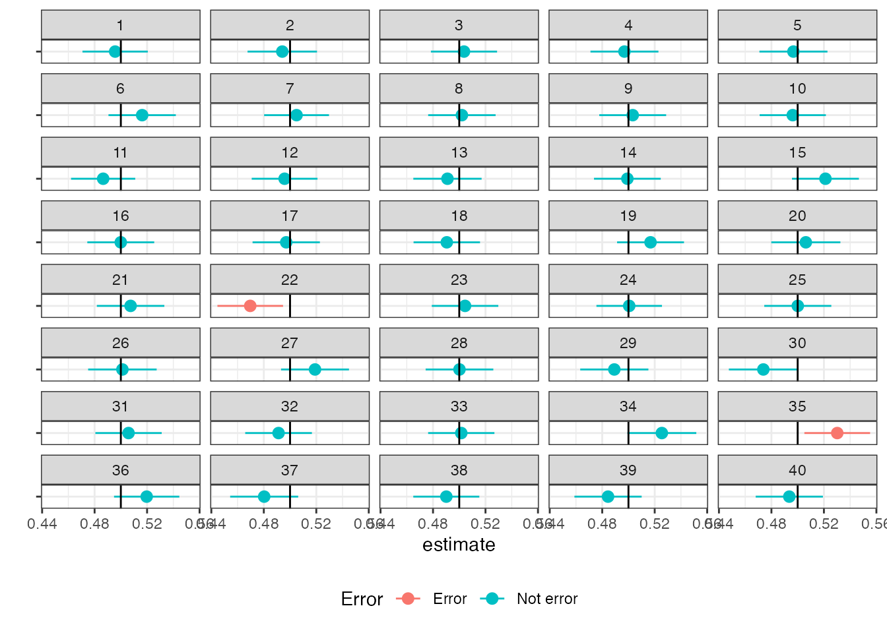

4 把握を目的とする要約: 単純な比較
本章では、変数 \(Y\) と 別のある変数 \(D\) の間の関係性を把握をゴールとする手法を紹介します。 このようなゴールにおいては、平均差の推定やOLSなど、経済学で伝統的に用いられてきた手法が有効であることを強調します。
4.1 推定対象
4.1.1 平均差
もし\(D\) が少数のカテゴリー (中心6区 VS その他)を表すのであれば、 \(D\) と \(Y\) の関係性を要約する代表的な指標は、\(Y\) の平均差です \[D=1におけるYの平均 - D=0におけるYの平均\]
4.1.2 補助線
\(D\) が整数や実数 (部屋の広さ)を表す場合であったとしても、原理的には母平均の差を定義することは可能ですが、推定することは困難です。 これは全く同じ\(D\)の値をとる事例数が少なすぎるためです。 この問題への対処としては、母平均そのものではなく、その補助線(Best Linear Projection)を推定することが有力です。 \[Yの平均値のモデル= \underbrace{\beta_0+\beta_1\times d}_{Best Linear Projection}\] \(\beta_0,\beta_1\) は、以下を最小化する値として定義します \[(D=dにおけるYの平均-Best\ Linear\ Projection)^2の平均値\] このようなモデルは、母集団上でOLS推定を仮想的に行った結果得られるモデルと完全に一致します。 このためPopulation OLS (母集団上でのOLS)と呼ばれることもあります。
注意点は、母集団上で仮想的に定義されたモデルであるという点です。 分析者は、このモデルを直接観察できず、データから推定する必要があります(後述のように、このような線型モデルは容易に推定できます。)。 言い換えると、分析課題に適した推定対象を定義するために導入されたモデルです。
4.2 推定方法
4.2.1 モーメント法
平均差やBLPの最も単純かつ優れた推定方法は、推定対象の母集団上での定義を、データに適用することです。 例えば、平均差については、\(D=1\) および \(D=0\) それぞれについて、\(Y\) のデータ上での平均値を計算し、その差を求めます1。 BLPについても、データ上で、\(Y\)を\(D\)でOLS推定した結果を推定値として用いることができます。
このような推定方法は、モーメント法と呼ばれます。2。
4.2.2 信頼区間
モーメント法が持つ大きな利点は、ある程度の事例数を持つランダムサンプリングデータであれば、推定値とEstimandの関係性について、近似的な性質が成り立つ点です。
データ上の単純平均値やOLSの結果であったとしても、データの偶然の偏りの影響は受けます。 このため、一般にデータから得た推定値は母平均と一致しません。 言い換えるならば、「推定値を母平均である」と強弁すると、ほぼ100\(\%\)間違いを犯していることになります。
多くの学術研究では、より信頼できる分析結果として、推定の精度を表す指標を合わせて報告します。 本ノートでは、代表的な指標である信頼区間を紹介します3。 信頼区間を端的に定義すると、 一定の確率(多くの初期設定で 95 \(\%\)) でEstimandを含む区間です。
より正確なイメージを持つために、仮想的な研究者を再度イメージしてください。 以下の数値例では、合計36名の研究者を想像し、それぞれが独立してデータを収集し、\(95\%\)信頼区間を計算しています。 Estimand (母平均) は0.5、一様分布からそれぞれ500事例収集しています。
期待値通り２名の 分析者(22と35)について、信頼区間がEstimandを明確に含まない結果となりました。
推定誤差の提示は、透明性を高めるためにも非常に重要です。 把握のための分析が特に求められるのは、企業戦略や政策決定などの、マクロな意思決定です。 これらの意思決定は、幅広い層に不可逆的な影響を与えることが多く、決定過程に対して透明性が求められます。 このためその判断材料となる情報にも、高い信頼性が求められます。 この点において、モーメント法は大きな利点を有します4。
4.2.3 「予測値の集計」の問題点
モーメント法の代替となる推定方法として、機械学習で推定した予測値を用いる方法があります。 例えば全ての事例について、予測値を算出し、その予測値の平均値を\(D=0\) と \(1\) それぞれについて算出し、差を計算します。
信頼区間など、母集団の特徴についての推定誤差を導出したい場合、この方法は、一般に推奨されません。 なぜならば、機械学習を用いた推定方法では、データと推定結果の関係性が複雑であり、一般的な関係性が不透明なためです。
4.3 Rによる実践例
以下のパッケージを使用
readr (tidyverseに同梱): データの読み込み
estimatr: OLS + Robust confidence interval
4.3.1 準備
データを取得します。 シンプルな比較分析について信頼区間は、データ分割を用いずに算出できます。
Data = readr::read_csv("Public.csv") # データ読み込み4.3.2 推定
estimatrパッケージ内のlm_robust関数を用いてOLS推定をします。 信頼区間も同時に計算できます。
例えば立地別の平均取引価格とその信頼区間は、以下で計算できます。
estimatr::lm_robust(
Price ~ District,
Data,
alpha = 0.05 # 信頼水準
) Estimate Std. Error t value Pr(>|t|) CI Lower
(Intercept) 49.544882 1.350350 36.690388 1.745377e-267 46.8977395
District中央区 7.091314 2.187476 3.241779 1.193986e-03 2.8031236
District中野区 -9.856420 2.086807 -4.723206 2.371427e-06 -13.9472663
District北区 -12.876540 1.816387 -7.089094 1.495990e-12 -16.4372719
District千代田区 5.356645 4.530838 1.182264 2.371454e-01 -3.5253261
District台東区 -11.194472 1.939907 -5.770622 8.270181e-09 -14.9973450
District品川区 -5.324154 2.040205 -2.609616 9.085635e-03 -9.3236446
District大田区 -19.161899 1.541545 -12.430320 4.562932e-35 -22.1838471
District文京区 -6.367891 2.245219 -2.836201 4.579809e-03 -10.7692765
District新宿区 -3.701065 1.974378 -1.874547 6.090085e-02 -7.5715111
District杉並区 -11.398479 2.003932 -5.688056 1.342130e-08 -15.3268624
District板橋区 -19.166705 1.544366 -12.410730 5.795223e-35 -22.1941827
District江戸川区 -14.379365 1.700541 -8.455761 3.404197e-17 -17.7129980
District江東区 -4.449929 1.693359 -2.627871 8.612771e-03 -7.7694837
District渋谷区 8.621508 3.150562 2.736498 6.226950e-03 2.4453432
District港区 27.616087 3.626363 7.615368 3.012509e-14 20.5071929
District目黒区 4.924307 2.471150 1.992719 4.633491e-02 0.0800203
District練馬区 -18.367485 1.669575 -11.001297 6.716948e-28 -21.6404139
District荒川区 -14.102733 2.059536 -6.847529 8.218814e-12 -18.1401184
District葛飾区 -20.518000 1.671244 -12.277082 2.932896e-34 -23.7942022
District豊島区 -13.685211 2.125035 -6.439992 1.282187e-10 -17.8509972
District足立区 -20.680762 1.542884 -13.403964 2.021371e-40 -23.7053355
District墨田区 -13.869062 1.675184 -8.279127 1.498715e-16 -17.1529884
CI Upper DF
(Intercept) 52.1920243 6355
District中央区 11.3795053 6355
District中野区 -5.7655744 6355
District北区 -9.3158085 6355
District千代田区 14.2386157 6355
District台東区 -7.3915991 6355
District品川区 -1.3246626 6355
District大田区 -16.1399503 6355
District文京区 -1.9665050 6355
District新宿区 0.1693818 6355
District杉並区 -7.4700956 6355
District板橋区 -16.1392275 6355
District江戸川区 -11.0457313 6355
District江東区 -1.1303735 6355
District渋谷区 14.7976731 6355
District港区 34.7249806 6355
District目黒区 9.7685943 6355
District練馬区 -15.0945553 6355
District荒川区 -10.0653478 6355
District葛飾区 -17.2417981 6355
District豊島区 -9.5194250 6355
District足立区 -17.6561890 6355
District墨田区 -10.5851361 6355Estimateが推定値、CI lower/CI upperが信頼区間の下限/上限を表します。
4.4 Reference
Imbens, Guido W. 2021. “Statistical Significance, p-Values, and the Reporting of Uncertainty.” Journal of Economic Perspectives 35 (3): 157–74.